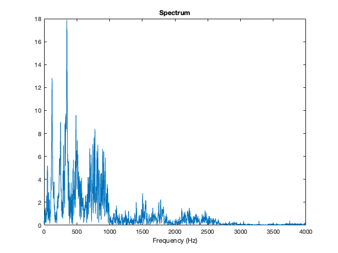
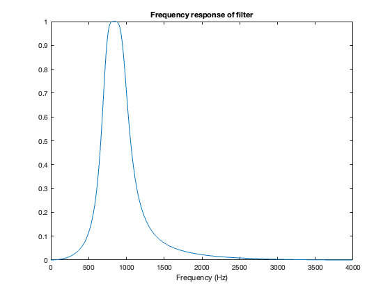
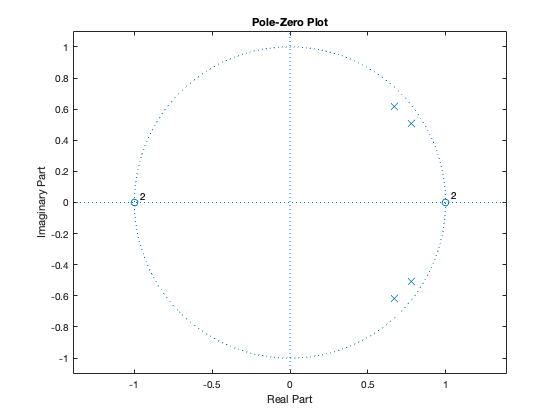
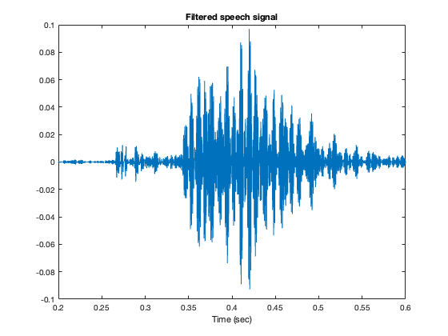
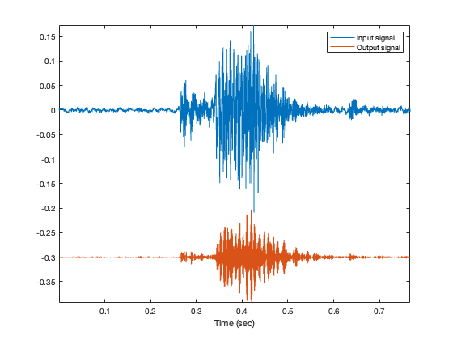
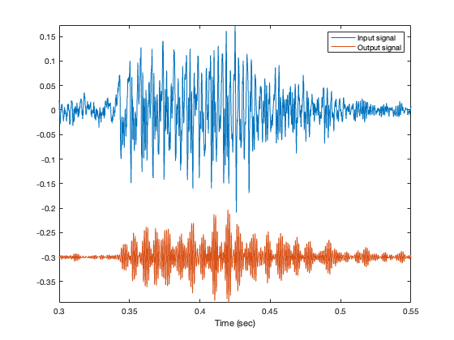
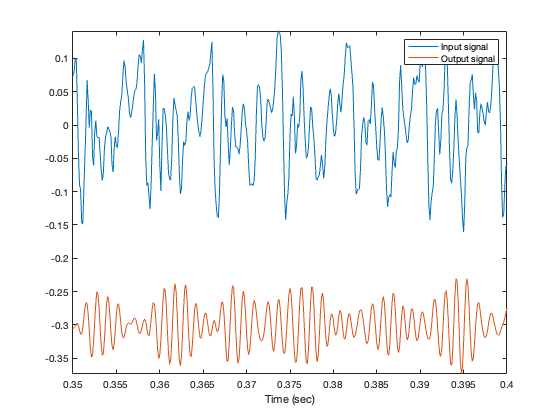
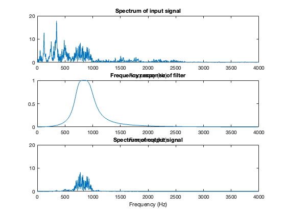

filter_cat.m
Band-pass filter demo
Contents
Load speech signal
clear close all info = audioinfo('cat01.wav')
info =
struct with fields:
Filename: '/Users/selesi/Library/Mobile Documents/com~apple~CloudDocs/Documents/my folders/teaching/classes/DSP Lab (Python)/demos/demos 2019/04 - Matlab and GUI/demo 04 - Matlab GUI/cat01.wav'
CompressionMethod: 'Uncompressed'
NumChannels: 1
SampleRate: 8000
TotalSamples: 6134
Duration: 0.7668
Title: []
Comment: []
Artist: []
BitsPerSample: 16
[x, Fs] = audioread('cat01.wav');
Fs
soundsc(x, Fs)
Fs =
8000
Plot waveform
N = length(x); t = (1:N)/Fs; figure(1) plot(t, x) xlabel('Time (sec)') title('Speech signal') xlim([0.2 0.6]) zoom on

Fourier transform
Use the FFT
% Use power of 2 for FFT speed Nfft = 2^ceil(log2(N)) X = fft(x, Nfft); % X will be of length Nfft fn = (0:Nfft-1)/Nfft; % fn : normalized frequency f = Fs * fn; % f : frequency in Hz figure(1) plot(f, abs(X)) xlabel('Frequency (Hz)') title('Spectrum') xlim([0 Fs/2])
Nfft =
8192
 Make a filter
Lets make a band-pass Butterworth filter
% Band-egdes (Hz) f1 = 700; f2 = 1000; % b, a : difference equation coefficients for Butterworth filter [b, a] = butter(2, [f1, f2]*2/Fs)
b =
0.0119 0 -0.0237 0 0.0119
a =
1.0000 -2.9016 3.7866 -2.4534 0.7166
Frequency response
Use 'freqz' to calculate the frequency response of the filter
[H, om] = freqz(b, a); f_freqz = om*Fs/(2*pi); plot(f_freqz, abs(H)) % plot(f_freqz, abs(H), [f1 f1], [0 1], 'r', [f2 f2], [0 1], 'r') title('Frequency response of filter') xlabel('Frequency (Hz)')
Pole-zero diagram
zplane(b, a)
Run the filter
Run the signal x through the difference equation
y = filter(b, a, x); % y : output of filter figure(1) plot(t, y) xlabel('Time (sec)') title('Filtered speech signal') xlim([0.2 0.6]) zoom on
Save output signal to wave file
Nbits = 32; % bits per sample audiowrite('cat01_bpf.wav', y, Fs, 'BitsPerSample', Nbits)
Plot the input and output signal (vertical offset of 'y' to make the signal more clear)
figure(1) plot(t, x, t, y - 0.3) legend('Input signal', 'Output signal') xlabel('Time (sec)') axis tight orient landscape print -dpdf -fillpage filter_cat_signals
xlim([0.3 0.55]) orient landscape print -dpdf -fillpage filter_cat_signals_2
xlim([0.35 0.4])
List to the output signal
soundsc(y, Fs)
Frequency-domain plots
Y = fft(y, Nfft); figure(2) subplot(3, 1, 1) plot(f, abs(X)) xlabel('Frequency (Hz)') title('Spectrum of input signal') xlim([0 Fs/2]) subplot(3, 1, 2) plot(f_freqz, abs(H) ) xlabel('Frequency (Hz)') title('Frequency response of filter') xlim([0 Fs/2]) subplot(3, 1, 3) plot(f, abs(Y)) xlabel('Frequency (Hz)') title('Spectrum of output signal') xlim([0 Fs/2]) ylim([0 20]) orient tall print -dpdf -fillpage filter_cat_freq
Exercises
Use a higher-order Butterworth filter. Compare.
Use a Chebyshev filter instead of a Butterworth filter (cheby1 or cheby2 in Matlab).
Use an Elliptic filter instead of a Butterworth filter (ellip in Matlab)
(For later) Implement the filter in real-time in PyAudio on the same wavefile. Read the wavefile into Python, implement a difference equation, and play the output signal as you calculate it.